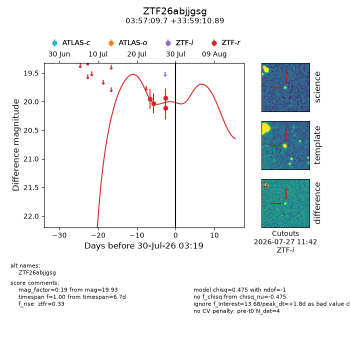
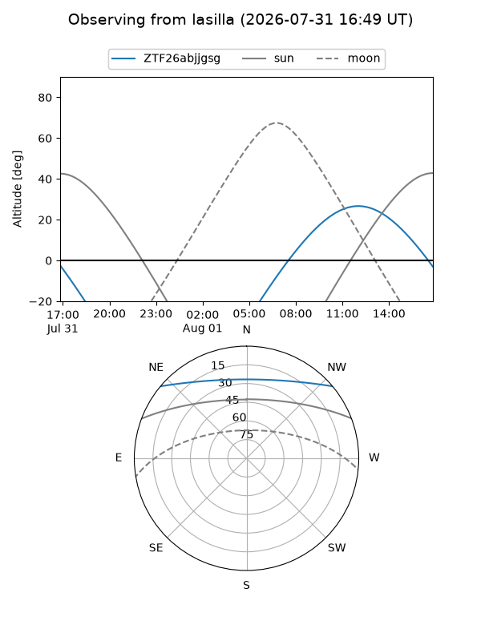
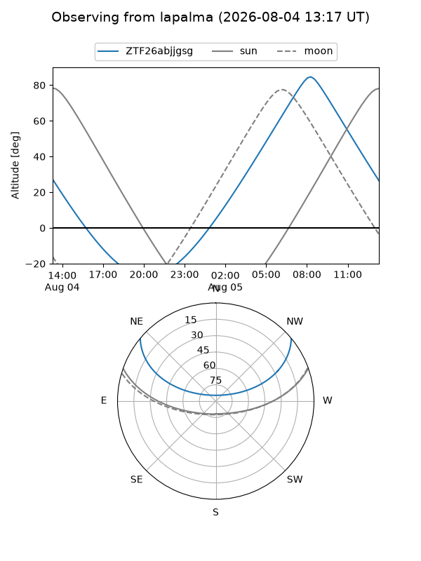
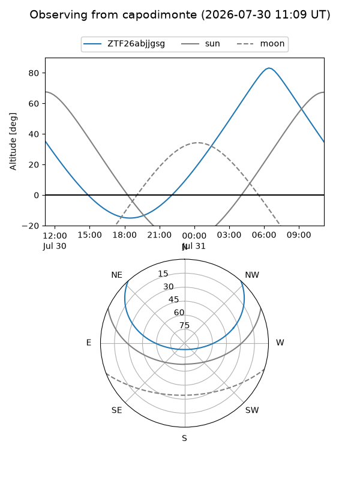
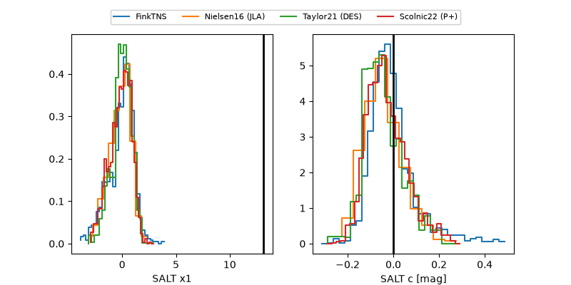

ZTF26abjjgsg
Target ZTF26abjjgsg at 2026-07-30 15:17
Aliases and brokers:
FINK-ZTF: ztf.fink-portal.org/ZTF26abjjgsg
Lasair-ZTF: lasair-ztf.lsst.ac.uk/objects/ZTF26abjjgsg
ALeRCE-ZTF: alerce.online/object/ZTF26abjjgsg
Direct TNS query: direct search
alt names
ZTF26abjjgsg (ztf,fink_ztf)
Coordinates:
equatorial (ra, dec) = 59.2903,+33.98636
equatorial (HMS+DMS) = 03:57:09.66,+33:59:10.89
galactic (l, b) = (161.3280,-14.69811)
Flags:
peak dt: +2.3
Photometry:
last ztfr=19.93
4 ztfr detections
Lightcurve

Visibility



Additional plots
